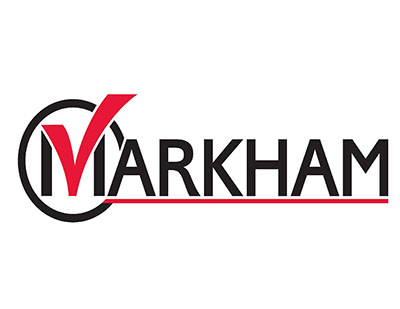

CITIZEN BUDGET
Powerful online budget simulator that educates
and engages citizens in the budget process
Interactive, innovative online budget consultations
About
Interactive budget simulator used by over 50 cities;
reaching 6 million citizens, coast-to-coast

Citizen Budget is a product of Open North - a non-profit organization dedicated to increasing government transparency and citizen engagement in the democratic process. Used successfully by many municipalities and school districts, Citizen Budget is a powerful and innovative tool that helps build community relations, educates residents and gauges their priorities on operating or capital budgets.
Unlike a regular survey or a budget visualization software, Citizen Budget is an interactive platform that shows the financial impacts of participants choices in real-time, educating them about the tradeoffs and constraints faced by their municipality. Citizen Budget creates a two-way dialogue between you and your community, providing both parties with rich and detailed information. Your residents can conveniently access your Citizen Budget consultation anytime and at their own pace, making it a clear improvement over public meetings which involve travel, time, childminding and other accessibility constraints.
-
Both citizens and elected officials appreciated the outreach and educational aspects of the web application, to better understand the budget and the difficulties in making decisions to achieve a balanced budget. It is no longer a question of spending hundreds of thousands of dollars over 3 years in order for a small select group to vote on how to spend 1 or 2 million dollars.
- Richard Ryan, Councillor, Plateau Mont-Royal -
Apart from the civic election, no other activity in municipal government has as much impact on the life of our city than the annual budget process. The City of Edmonton strives for an open government where citizen engagement is of paramount importance, and Citizen Budget has helped us advance this goal.
- Jason Darrah, Director of Public Communications, City of Edmonton
Features
- checkedEasy onboarding process, comprehensive Welcome Package, dedicated client support
- checkedCompletely customizable and branded to look like an extension of your corporate website
- checkedHosted on our servers with maintenance and reporting, no IT requirements on your end
- checkedEmbed links to your website, pdf, chart or video
- checkedEmbed charts, video, images and graphs directly
- checkedA variety of tools/widgets to help ask your questions effectively
- checkedComment boxes and survey questions to get valuable qualitative feedback
Optional Features
- checkedCustom features: summary table, impact statements, embedded dashboard, heatmaps, customized sliders, dynamic pie charts
- checkedCommunications template and tools
- checkedTranslated versions of your budget consultation in any language
- checkedPrint versions of your budget consultation to reach your offline residents
Who's Using
More than 50 clients use Citizen Budget to effectively engage millions of residents in their budget consultations


- 


Overview
Mobile Friendly
Mobile Friendly
Accessible on a wide range of smartphones and mobile devices
Customizable
Customizable
Our flexible platform and variety of different modules allows your to modify Citizen Budget to best suit your needs
Ever-expanding suite of customization packages at your disposal to increase the interactivity and engagement factor
Security
Security
Highly robust and comprehensive protocols. Authorized access to the Citizen Budget web application requires password authentication. Software packages are updated daily to protect against known vulnerabilities
Data resides with you once the consultation is over
Option to include information for residents on how their responses will be handled
Hosting
Hosting
Cloud-based hosting on secure Canadian or US servers, as needed, with a 99.99% uptime guarantee
Backup, maintenance and reporting included; no IT requirements on your end
Domain name of your choice or subdomain of citizenbudget.com
Client Support
Client Support
Client-centered, flexible and highly-responsive approach
Comprehensive support materials including best practices, text templates to choose from, promotional tips and more
Dedicated support person with regular check-ins will assist with all stages of project cycle and build your Citizen Budget consultation based on data you provide
Industry-leading response times
Multiple Modules
Multiple Modules
Highly-innovative suite of budget modules allows you to engage residents in a variety of ways:
Challenge them to balance the budget, using real data
Ask them to prioritize spending on a large capital project or amongst a variety of capital projects
Engage them on costs and associated tax impacts of program and service spending
Allow them to vote on allocating dollars to their favourites projects via “Participatory Budgeting”
Branding
Branding
Branding of your Citizen Budget consultation to be identical with your corporate/website branding to ensure a seamless offering from you to your residents
Tracking
Tracking
Private dashboard allows you to track analytics and trends on your Citizen Budget consultation along with a report that aggregates and analyzes all responses on daily basis. Residents can track how their responses measure up to everyone else’s.
Accessibility
Accessibility
AODA/WCAG 2.0, Level AA compliant